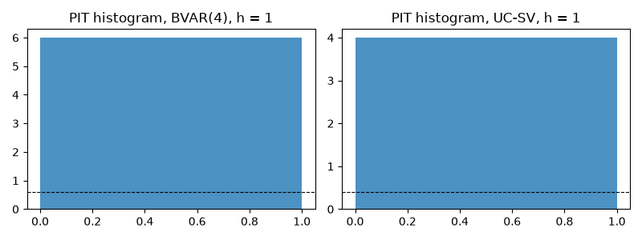
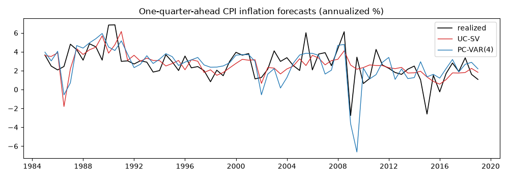

Note
Go to the end to download the full example code.
An inflation forecasting horse race, evaluated properly#
Stock and Watson (2007) asked why U.S. inflation had become harder to forecast and answered with a tournament: autoregressions, Phillips-curve models with unemployment, the Atkeson-Ohanian four-quarter average, and an unobserved-components model with stochastic volatility, all run recursively over the Great Moderation. The finding was that the naive averages and the UC-SV model were hard to beat and that the Phillips curve added little after 1984.
This example reproduces that design on CPI inflation and spends most of its effort on the evaluation, which is where forecasting papers are won or lost: pairwise Diebold-Mariano tests with the small-sample correction, the Clark-West adjustment for nested models, forecast encompassing, Mincer-Zarnowitz efficiency regressions, the model confidence set, density calibration for the two models that produce predictive distributions, and a forecast combination.
Data#
Quarterly CPI inflation at an annualized rate (units="cca" is the
continuously compounded annual rate of change), the unemployment rate
and the federal funds rate, 1960-2019. The evaluation sample starts
in 1985.
import matplotlib.pyplot as plt
import numpy as np
from cultivars.bayes.priors import NormalInverseWishartPrior
from cultivars.forecast.backtest import Backtest
from cultivars.forecast.calibration import Calibration
from cultivars.forecast.comparison import (
ForecastComparison,
clark_west,
encompassing,
mincer_zarnowitz,
)
from cultivars.forecast.confidence_set import model_confidence_set
from cultivars.multivariate.large_dim.bayesian import BVAR
from cultivars.multivariate.reduced_form.vector_autoregression import VAR
from cultivars.univariate.stochastic_volatility import UCSV
from _fred import fetch
data = fetch(
{"infl": "CPIAUCSL", "u": "UNRATE", "ffr": "FEDFUNDS"},
start="1959-10-01",
end="2019-12-01",
frequency="q",
aggregation_method="avg",
units={"infl": "cca"},
)
inflation = data["infl"].to_numpy()
panel = data.to_numpy()
start = int(np.flatnonzero(data.index == "1985-01-01")[0])
horizons = 4
step = 2
print(f"{len(data)} quarters; evaluation from {data.index[start]:%Y-%m} at every second origin")
241 quarters; evaluation from 1985-01 at every second origin
Five forecasters#
The Atkeson-Ohanian forecast is the mean of the last four quarters at every horizon. The AR(4) is a one-variable VAR, which carries the forecasting interface. The Phillips-curve model is a bivariate VAR(4) in inflation and unemployment, whose inflation equation nests the AR(4). The Bayesian VAR adds the funds rate under a Minnesota-type prior and forecasts from its posterior predictive. The UC-SV model is Stock and Watson’s trend-plus-noise model with both variances stochastic, forecasting by simulation from its Gibbs draws.
class AtkesonOhanian:
"""Four-quarter trailing mean as the forecast at every horizon."""
def __init__(self, window: np.ndarray) -> None:
"""Keep the trailing mean of the last four observations."""
self.level = float(np.asarray(window)[-4:].mean())
def forecast(self, steps: int) -> np.ndarray:
"""Repeat the trailing mean."""
return np.full((steps, 1), self.level)
def fit_bvar(window: np.ndarray) -> object:
"""BVAR(4) on inflation, unemployment and the funds rate."""
prior = NormalInverseWishartPrior(tightness=0.2)
return BVAR(window, order=4, prior=prior, names=("infl", "u", "ffr")).fit(n_draws=300, seed=10)
def fit_ucsv(window: np.ndarray) -> object:
"""UC-SV posterior with a short chain, enough for a predictive draw."""
return UCSV(window).fit(n_draws=300, n_burn=100, seed=10)
def predict_ucsv(result: object, steps: int, seed: int | None) -> np.ndarray:
"""Predictive paths as (n_draws, steps, 1)."""
return result.forecast(steps, n_paths=300, seed=seed)[:, :, None]
records = {
"AO": Backtest(inflation, AtkesonOhanian, horizons=horizons, start=start, step=step).run(),
"AR(4)": Backtest(
inflation,
lambda w: VAR(w[:, None], order=4).fit(),
horizons=horizons,
start=start,
step=step,
).run(),
"PC-VAR(4)": Backtest(
panel[:, :2],
lambda w: VAR(w, order=4, names=("infl", "u")).fit(),
horizons=horizons,
start=start,
step=step,
names=("infl", "u"),
).run(),
"BVAR(4)": Backtest(
panel, fit_bvar, horizons=horizons, start=start, step=step, names=("infl", "u", "ffr")
).run(seed=10),
"UC-SV": Backtest(
inflation, fit_ucsv, horizons=horizons, start=start, step=step, predict=predict_ucsv
).run(seed=10),
}
n_origins = records["AO"].n_origins
print(f"{n_origins} origins")
69 origins
Point accuracy#
Root mean squared errors for inflation at one and four quarters, relative to the AR(4).
def inflation_rmse(record: object, h: int) -> float:
"""RMSE of the inflation forecast at horizon h."""
return float(record.rmse[h - 1, 0])
print(f"{'model':11s} {'h=1':>8s} {'h=4':>8s} (relative to AR(4))")
for label, record in records.items():
ratios = [inflation_rmse(record, h) / inflation_rmse(records["AR(4)"], h) for h in (1, 4)]
print(f"{label:11s} {ratios[0]:8.3f} {ratios[1]:8.3f}")
model h=1 h=4 (relative to AR(4))
AO 0.909 0.899
AR(4) 1.000 1.000
PC-VAR(4) 1.119 1.029
BVAR(4) 0.916 1.012
UC-SV 0.922 0.908
Pairwise tests against the autoregression#
Three statistics on the same loss differential: the Diebold-Mariano
test, its Harvey-Leybourne-Newbold small-sample correction, and the
Giacomini-White test of conditional predictive ability. The forecasts
are two quarters apart, so at h = 4 consecutive errors still overlap
and the long-run variance estimate matters; the horizon handed to
the comparison is that overlap measured in origins, h / step.
for h in (1, 4):
print(f"\nh = {h}: squared-error loss relative to AR(4)")
benchmark = records["AR(4)"].losses("squared", horizon=h, name="y")
for label in ("AO", "PC-VAR(4)", "BVAR(4)", "UC-SV"):
name = "infl" if records[label].k_endog > 1 else "y"
losses = records[label].losses("squared", horizon=h, name=name)
test = ForecastComparison(losses, benchmark).compute(horizon=max(1, h // step))
print(
f" {label:10s} DM {test.dm_statistic:6.2f} (p={test.dm_pvalue:.3f}) "
f"HLN {test.hln_statistic:6.2f} (p={test.hln_pvalue:.3f}) "
f"GW {test.gw_statistic:6.2f} (p={test.gw_pvalue:.3f})"
)
h = 1: squared-error loss relative to AR(4)
AO DM -0.81 (p=0.419) HLN -0.80 (p=0.426) GW 0.66 (p=0.718)
PC-VAR(4) DM 1.00 (p=0.320) HLN 0.99 (p=0.327) GW 2.16 (p=0.340)
BVAR(4) DM -0.82 (p=0.410) HLN -0.82 (p=0.416) GW 0.68 (p=0.712)
UC-SV DM -0.48 (p=0.634) HLN -0.47 (p=0.638) GW 0.93 (p=0.630)
h = 4: squared-error loss relative to AR(4)
AO DM -2.33 (p=0.020) HLN -2.28 (p=0.026) GW 4.36 (p=0.113)
PC-VAR(4) DM 1.05 (p=0.295) HLN 1.02 (p=0.310) GW 2.26 (p=0.323)
BVAR(4) DM 0.66 (p=0.512) HLN 0.64 (p=0.523) GW 0.94 (p=0.625)
UC-SV DM -1.49 (p=0.137) HLN -1.45 (p=0.150) GW 1.80 (p=0.406)
Nested models: the Clark-West adjustment#
The Phillips-curve VAR nests the AR(4), and under the null that the unemployment terms are zero the larger model’s estimation noise makes its mean squared error larger in expectation. Clark and West (2007) subtract that noise before testing; a positive adjusted statistic says the extra variables have predictive content even when the raw RMSE ratio is above one.
for h in (1, 4):
realized = records["AR(4)"].realized[:, h - 1, 0]
restricted = records["AR(4)"].point[:, h - 1, 0]
unrestricted = records["PC-VAR(4)"].point[:, h - 1, 0]
test = clark_west(realized, restricted, unrestricted, horizon=max(1, h // step))
print(
f"h = {h}: Clark-West {test.statistic:6.2f} (p = {test.pvalue:.3f}); "
f"MSPE restricted {test.mspe_restricted:.3f}, unrestricted {test.mspe_unrestricted:.3f}"
)
h = 1: Clark-West -0.51 (p = 0.695); MSPE restricted 2.901, unrestricted 3.632
h = 4: Clark-West -0.27 (p = 0.605); MSPE restricted 6.895, unrestricted 7.295
Encompassing and efficiency#
Forecast encompassing asks whether the AR(4) forecast would be improved by any weight on the UC-SV forecast; the Mincer-Zarnowitz regression asks whether each forecast is unbiased and efficient, a joint test of intercept zero and slope one.
h = 1
realized = records["AR(4)"].realized[:, h - 1, 0]
enc = encompassing(realized, records["AR(4)"].point[:, 0, 0], records["UC-SV"].point[:, 0, 0])
print(f"AR(4) encompasses UC-SV: weight on UC-SV {enc.weight:.3f}, p = {enc.pvalue:.3f}")
print(f"\n{'model':11s} {'intercept':>10s} {'slope':>7s} {'R^2':>6s} {'p':>7s}")
for label, record in records.items():
mz = mincer_zarnowitz(realized, record.point[:, 0, 0], horizon=1)
print(f"{label:11s} {mz.intercept:10.3f} {mz.slope:7.3f} {mz.r_squared:6.3f} {mz.pvalue:7.3f}")
AR(4) encompasses UC-SV: weight on UC-SV 0.633, p = 0.056
model intercept slope R^2 p
AO 1.069 0.618 0.206 0.143
AR(4) 1.433 0.472 0.228 0.014
PC-VAR(4) 1.706 0.376 0.184 0.006
BVAR(4) 1.223 0.556 0.314 0.001
UC-SV 1.083 0.601 0.181 0.116
The model confidence set#
Rather than one benchmark against the rest, Hansen, Lunde and Nason’s procedure eliminates models from the full set until the remaining ones cannot be told apart at the chosen level. The set reported is the collection of forecasters the evaluation sample cannot rank.
for h in (1, 4):
loss_matrix = np.column_stack(
[
records[label].losses(
"squared", horizon=h, name="infl" if records[label].k_endog > 1 else "y"
)
for label in records
]
)
mcs = model_confidence_set(loss_matrix, names=tuple(records), alpha=0.1, seed=10)
print(f"\nh = {h}")
print(mcs.summary())
h = 1
Model Confidence Set
================================================================================
Models: 5 Origins: 69
Level: 90% In set: 5
--------------------------------------------------------------------------------
model mean loss MCS p
PC-VAR(4) 3.63199 0.566 in
AR(4) 2.90112 0.594 in
UC-SV 2.46480 0.967 in
BVAR(4) 2.43310 0.967 in
AO 2.39917 1.000 in
================================================================================
5 of 5 models in the 90% set: AO, BVAR(4), UC-SV, AR(4), PC-VAR(4).
Sequential elimination with the range statistic; null distribution from 1000
stationary-bootstrap resamples with expected block length 4. A model's p-value
is the running maximum of the elimination p-values up to its own (Hansen, Lunde
& Nason, 2011).
The set contains the best model with probability at least the confidence level;
a set that keeps many models reports what the window can separate.
h = 4
Model Confidence Set
================================================================================
Models: 5 Origins: 69
Level: 90% In set: 2
--------------------------------------------------------------------------------
model mean loss MCS p
BVAR(4) 7.06202 0.062 out
PC-VAR(4) 7.29514 0.085 out
AR(4) 6.89504 0.085 out
UC-SV 5.68316 0.843 in
AO 5.57764 1.000 in
================================================================================
2 of 5 models in the 90% set: AO, UC-SV.
Sequential elimination with the range statistic; null distribution from 1000
stationary-bootstrap resamples with expected block length 4. A model's p-value
is the running maximum of the elimination p-values up to its own (Hansen, Lunde
& Nason, 2011).
The set contains the best model with probability at least the confidence level;
a set that keeps many models reports what the window can separate.
Density calibration#
The BVAR and the UC-SV forecast distributions, not just points. The probability integral transforms of the one-quarter-ahead forecasts should be uniform; the Berkowitz test and the histogram say whether they are, and the CRPS compares the two densities directly.
for label in ("BVAR(4)", "UC-SV"):
record = records[label]
pit = Calibration(record.paths[:, :, 0, 0], record.realized[:, 0, 0]).compute()
print(f"{label}: CRPS h=1 {record.mean_crps[0, 0]:.3f}, h=4 {record.mean_crps[3, 0]:.3f}")
print(pit.summary())
fig, axes = plt.subplots(1, 2, figsize=(8, 3))
for ax, label in zip(axes, ("BVAR(4)", "UC-SV"), strict=True):
record = records[label]
pit = Calibration(record.paths[:, :, 0, 0], record.realized[:, 0, 0]).compute()
counts = pit.histogram(bins=10)[0]
ax.bar(np.arange(10) / 10 + 0.05, counts, width=0.1, color="C0", alpha=0.8)
ax.axhline(counts.sum() / 10, color="k", ls="--", lw=0.8)
ax.set_title(f"PIT histogram, {label}, h = 1")
fig.tight_layout()

BVAR(4): CRPS h=1 0.881, h=4 1.334
Density Forecast Calibration
================================================================================
Series: 1 Origins: 69
--------------------------------------------------------------------------------
series PIT mean PIT sd Berkowitz p
y1 0.498 0.280 0.9351
================================================================================
Under correct calibration the PIT series is uniform: mean 0.500, standard
deviation 0.289, Berkowitz p-value well away from zero. A U-shaped histogram is
overconfidence, a hump is overdispersion, a slope is bias -- histogram() draws
the picture.
The Berkowitz null assumes one-step transforms; multi-step forecasts overlap
mechanically, and their serial correlation reads as miscalibration here.
UC-SV: CRPS h=1 0.860, h=4 1.178
Density Forecast Calibration
================================================================================
Series: 1 Origins: 69
--------------------------------------------------------------------------------
series PIT mean PIT sd Berkowitz p
y1 0.511 0.269 0.3942
================================================================================
Under correct calibration the PIT series is uniform: mean 0.500, standard
deviation 0.289, Berkowitz p-value well away from zero. A U-shaped histogram is
overconfidence, a hump is overdispersion, a slope is bias -- histogram() draws
the picture.
The Berkowitz null assumes one-step transforms; multi-step forecasts overlap
mechanically, and their serial correlation reads as miscalibration here.
Forecast combination#
The equal-weight combination of the five point forecasts is the benchmark every weighting scheme has to beat and rarely does by much. Its RMSE is reported beside the best single model’s.
for h in (1, 4):
points = np.column_stack([records[label].point[:, h - 1, 0] for label in records])
realized = records["AR(4)"].realized[:, h - 1, 0]
combined = points.mean(axis=1)
rmse_combined = float(np.sqrt(np.mean((combined - realized) ** 2)))
single = {label: inflation_rmse(record, h) for label, record in records.items()}
best = min(single, key=single.get)
print(f"h = {h}: equal-weight RMSE {rmse_combined:.3f}; best single {best} {single[best]:.3f}")
fig, ax = plt.subplots(figsize=(10, 3.5))
dates = data.index[records["AR(4)"].origins]
ax.plot(dates, records["AR(4)"].realized[:, 0, 0], color="k", lw=1.2, label="realized")
ax.plot(dates, records["UC-SV"].point[:, 0, 0], color="C3", lw=1.0, label="UC-SV")
ax.plot(dates, records["PC-VAR(4)"].point[:, 0, 0], color="C0", lw=1.0, label="PC-VAR(4)")
ax.set_title("One-quarter-ahead CPI inflation forecasts (annualized %)")
ax.legend(loc="upper right")
fig.tight_layout()

h = 1: equal-weight RMSE 1.520; best single AO 1.549
h = 4: equal-weight RMSE 2.476; best single AO 2.362
What to take away#
An evaluation sample of a few dozen origins can confirm that a model is not worse than the autoregression; it rarely proves one is better. The model confidence set makes that limitation explicit. The density diagnostics are where the UC-SV model earns its place: its trend volatility tracks the change in the inflation process that Stock and Watson documented, and a calibrated predictive distribution is worth more to a policymaker than a point forecast with a slightly lower RMSE.
Total running time of the script: (0 minutes 41.026 seconds)